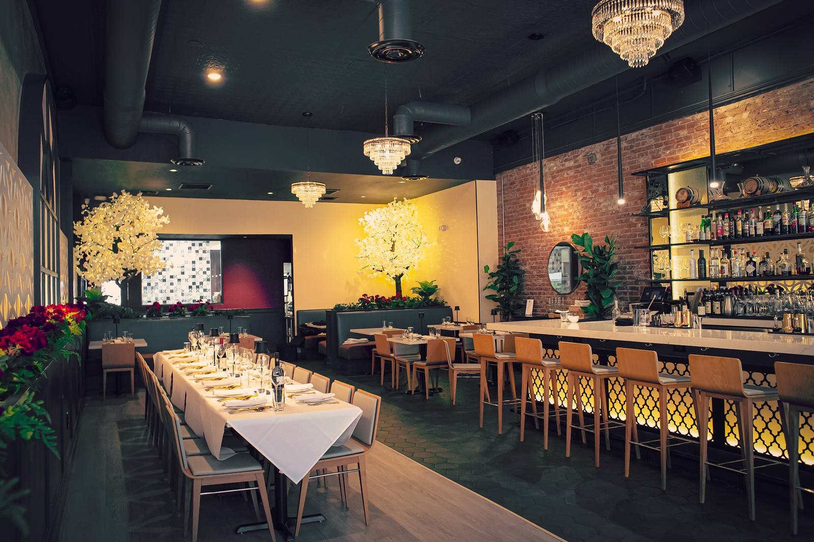
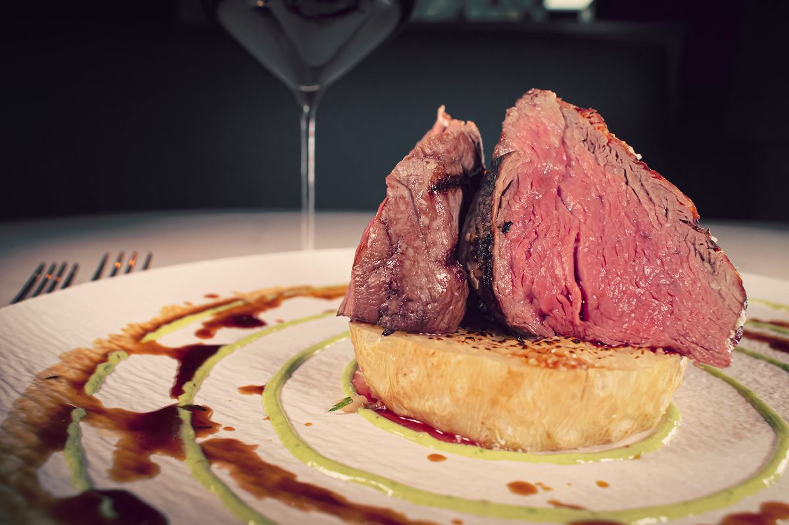
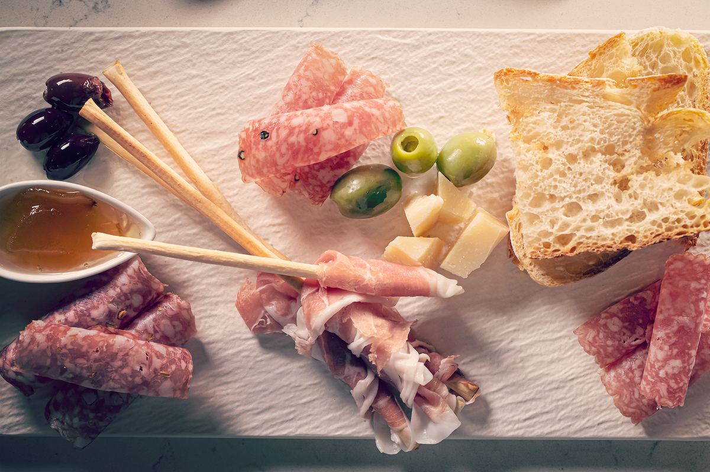
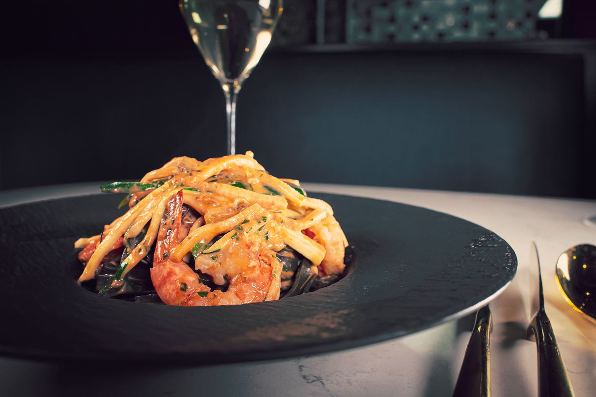

Downtown Flagstaff
Italian food & wine, staged in a former theater
Handmade pasta, grilled meats and seafood, and more than a hundred all-Italian wines, served in courses at the heart of downtown Flagstaff.

Lunch & DinnerEvery day from noon
All-Italian Wine125 hand-selected bottles
Happy HourDaily, 3 – 5pm
The Kitchen
Tradition, with a little theater
Locally sourced produce, fresh Mediterranean seafood and ingredients imported from Italy. Pasta is made by hand, and the dinner menu is meant to be enjoyed in courses.



From the Dinner Menu
A few favorites
- Pappardelle Ragu28slow cooked lamb ragu, pecorino romano
- Lasagna34pork & beef ragu, ricotta, mozzarella, basil
- Bucatini42seared sea scallops, white wine, butter, capers, shallot, garlic, parsley, lemon zestGF
- Pork Osso Buco38braised bone-in pork shank, rustic tomato sauce, grana padano add tagliatelle noodles 8
- Filetto688 oz filet mignon, butternut squash ravioli, peppercorn cream sauce SURF & TURF*: add 4 grilled shrimp +12, add 2 scallops +28
- Antipasto Italiano26salami milano, speck, soppressata, grana padano, truffle moliterno, havarti, marinated olives, crostiniGF

The Cellar & Bar
Wine from every corner of Italy
From Alto Adige to Sicily and from Barolo to Brunello, the list is entirely Italian. Wines by the glass begin at $10. Ask for a recommendation, and any unfinished bottle can be recorked for you to take home.

Hours
Lunch & dinner, every day
Sunday – Thursday · Noon – 9pm
Friday – Saturday · Noon – 10pm